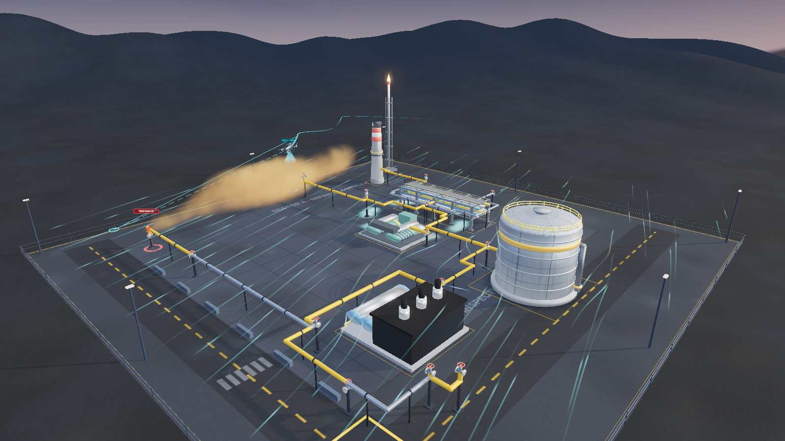
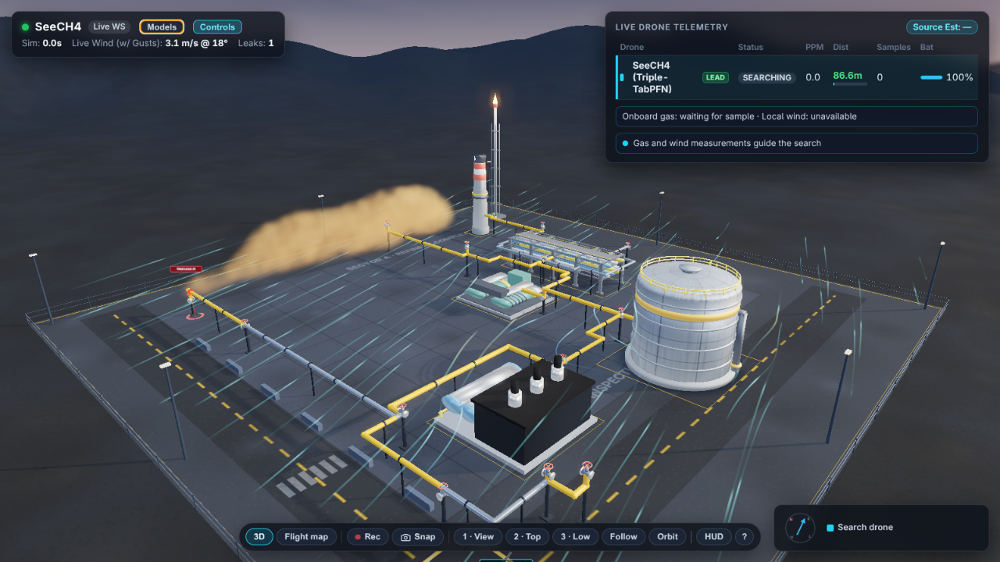

PlumeSense
Autonomous inspection drones that pinpoint industrial gas leaks in 3D — turning turbulent plumes into exact valve-level locations in minutes.
Industrial gas leaks are hard to pinpoint
official methane estimates across six studied U.S. oil and gas regions
- Alarm goes off: which valve or pipe connection is leaking?
- Methane is the second-largest driver of human-caused warming after CO2
- Turbulent wind, buildings, and sensor lag smear plumes downwind
A recurring inspection need
- EU rules: regular inspections, documented per component
- PlumeSense: autonomous drone platform that pinpoints where to follow up
- Methane first; other gases use other sensors, same platform

Autonomous drone inspection run over the facilityThree TabPFN instances, one flight loop

Search prior
Pipes, wind and clean-air readings → where to sample first
Source localization
Gas readings + wind + plume physics → ranked 3D candidates
Plume mapping
Live readings + prior examples → concentration map in 3D
Built on a physics-accurate 3D testbed
Zero-Shortcut In-Context Learning
TabPFN contexts are collected strictly on unseen procedural layouts — generalizing to new industrial sites without retraining.
Causal Sensor-Lag Deconvolution
Compensates for asymmetric chemical sensor lag (0.6 s rise / 1.8 s decay) and tolerates 30% sensor dropout faults.
3D Obstacle-Aware Navigation
3D A* routes safely around tanks, pipe racks, and buildings while running TabPFN inference asynchronously off the flight loop.
Live Baseline Benchmarking
Race PlumeSense live against Wind-Plume, Gradient, and Lawnmower drones under shifting wind and turbulent wakes.